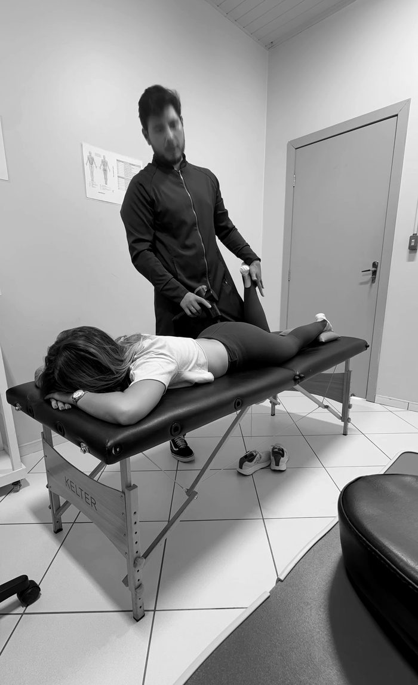
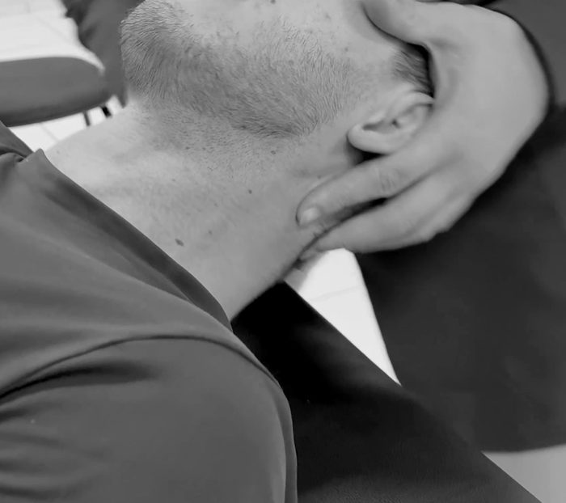

Quiropraxia e fisioterapia · Guarapuava, PR
Antes do ajuste,a avaliação.
Sou Rhicardo Henrick, fisioterapeuta e quiropraxista. Antes de qualquer técnica, eu escuto a sua história, faço os testes e procuro de onde vem a dor. Aí sim começa o tratamento.
- Fisioterapeuta · CREFITO-8 368180-F*
- Professor na UniGuairacá
- Policlínica Guairacá
I O que o exame não conta
Você não éo seu exame.
Muita gente chega ao consultório com a ressonância na mão e o medo na cabeça. Só que alteração na imagem é comum também em quem não sente dor nenhuma. Por isso o exame entra na avaliação como apoio, nunca como ponto de partida.
“O exame de imagem nunca vai ser nosso primeiro critério. Porque tudo que aparece numa pessoa com dor pode também aparecer numa pessoa sem dor.”
Abaulamento de disco em pessoas sem dor
Quanto da população sem nenhum sintoma já mostra abaulamento de disco na ressonância, por idade.
Fonte: Brinjikji W. et al. Revisão sistemática de achados de imagem da coluna em populações sem sintomas. American Journal of Neuroradiology, 2015 (3.110 pessoas). O mesmo artigo que o Rhicardo mostra no vídeo.
II A consulta
Quatro etapas,nessa ordem.
Cada etapa tem um objetivo. Pular a avaliação pra ir direto ao ajuste é tratar no escuro.
-
Primeiro
Escuta
Onde dói, desde quando, o que piora e o que alivia. A rotina, o sono, o trabalho e o treino entram na conversa, porque também entram na dor.
Como funciona a consultaVídeo do Rhicardo · 1 min -
Depois
Testes
Testes clínicos e neurológicos pra confirmar ou descartar hipóteses. Se você tem exames, eles entram aqui, como apoio. Se algum sinal pedir avaliação médica, você sai daqui encaminhado.

-
Só então
Tratamento
A técnica sai da avaliação: ajuste quiroprático quando é indicado, terapia manual, agulhamento seco, movimentos direcionados e exercício. Antes de cada etapa, você sabe o que vai ser feito.


-
E todos os dias
Depois da sessão
Você sai sabendo o que fazer em casa. Sono, alimentação, água, exercício e estresse também mexem com a dor, então também entram no plano.
“A sessão é uma parte do tratamento. O restante acontece todos os dias.”
Rhicardo, no Instagram
* Nas fotos e vídeos com paciente, o site final só usa imagens com termo de autorização de imagem assinado (Res. COFFITO 532/2021). Nesta prévia, são as que o próprio Rhicardo já publicou.
III O que eu trato
Da lombar ao joelhode quem corre.
Passe o mouse em cada queixa pra ver onde ela mora na coluna.Cada queixa leva ao que vale saber antes da primeira consulta.
- 01 Dor lombar e ciáticoTravou ao levantar, a dor desceu pra perna, saiu torto de um jogo de futebol.Ver a página completa
- 02 Hérnia de discoO exame mostrou hérnia. A avaliação mostra o que ela tem a ver, ou não, com a sua dor.
- 03 Pescoço e coluna cervicalDor e rigidez no pescoço, travamento ao virar a cabeça.
- 04 Dor muscular e contraturasTerapia manual e agulhamento seco, com as contraindicações explicadas antes.
- 05 Joelho, corrida e pós-operatórioDor na lateral do joelho ao correr (trato iliotibial) e reabilitação depois de cirurgia, fase por fase.
IV Na prática
Do consultório,sem roteiro.
Toque em “com som” pra ouvir o Rhicardo explicando o que está fazendo e por quê.
V Quem atende
RhicardoHenrick
Me formei em Fisioterapia na UniGuairacá e hoje dou aula no mesmo curso. Sou o responsável pelos atendimentos de quiropraxia na Policlínica Guairacá, a clínica-escola da instituição, e me especializei em quiropraxia.
Gosto de explicar o que estou fazendo e por quê. No Instagram, isso virou a série Descomplicando a hérnia de disco, com o estudo citado na legenda. No consultório, vira uma avaliação em que você entende o que está acontecendo com o seu corpo.
- FormaçãoFisioterapia, UniGuairacá
- EspecializaçãoQuiropraxia*
- DocênciaProfessor no curso de Fisioterapia da UniGuairacá
- AtendimentoPoliclínica Guairacá, Alto da XV
- RegistroCREFITO-8 368180-F*
VI Quem já passou pelo consultório
“Atencioso, procura entender todos os detalhes da situação do paciente antes de qualquer procedimento.”
“Fui tratada com muita atenção, cuidado e profissionalismo durante todo o atendimento.”
“Atencioso, gentil e extremamente cuidadoso com os pacientes!”
* Trechos de avaliações públicas no Google. No site final, cada trecho entra só com a autorização escrita de quem escreveu (Res. COFFITO 532/2021).
VII Dúvidas
O que perguntamantes da primeira.
O estalo é a vértebra voltando pro lugar?
Preciso de encaminhamento médico?
Quem tem hérnia de disco pode fazer quiropraxia?
Dói?
Quantas sessões vou precisar?
Quanto custa?
VIII Onde atendo
Agende suaavaliação.
Endereço
Policlínica Guairacá
R. Sen. Pinheiro Machado, 571
Alto da XV · Guarapuava, PR
Horário
Segunda a sexta, das 8h às 21h
Com hora marcada
Contato e estrutura
(42) 98836-3200
Estacionamento coberto gratuito
Acesso para cadeira de rodas